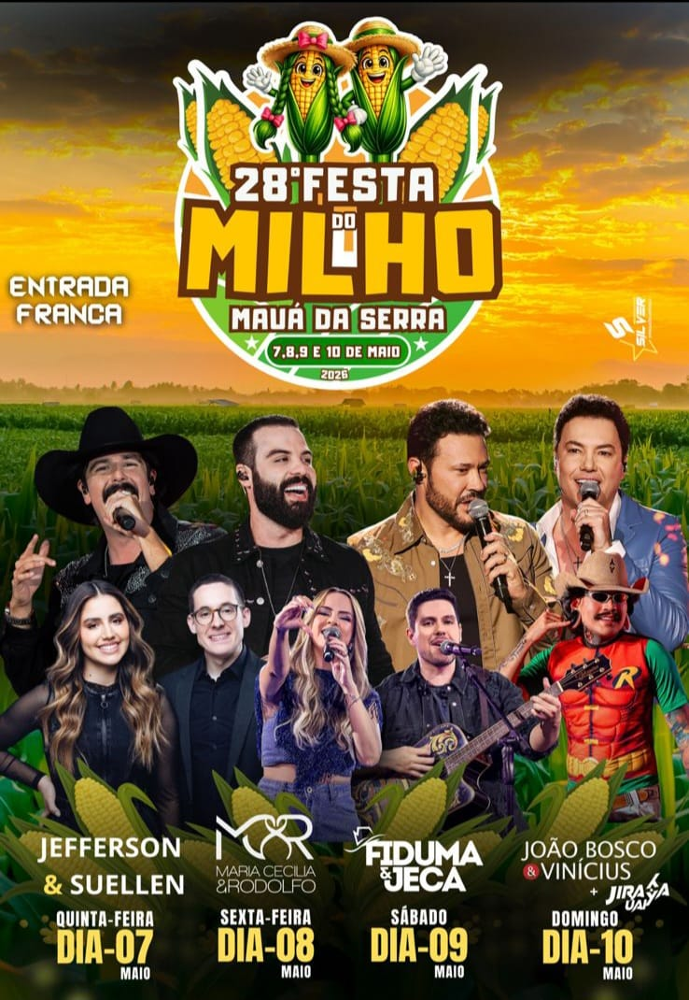

Atrações
- Praça de Alimentação (Comidas típicas a base de milho)
- Parque de Diversão
- Corrida e Caminhada do Milho
- Fazendinha
- Exposição de Máquinas
Shows
- Jefferson & Suellen (07/05)
- Desfile e escolha da princesa e rainha + Maria Cecília & Rodolfo (08/05)
- Fiduma & Jeca + DJ Leozzn (09/05)
- João Bosco & Vinícius + DJ Jiraya Uai (10/05)
Cartaz Oficial do Evento
